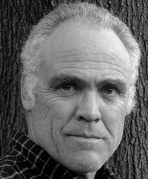

#8845 Was auch geschehen mag
Alternativ: The Shunning

 IMDB-Wertung: 6.3 / 10
IMDB-Wertung: 6.3 / 10  Metascore: 0
Metascore: 0 
In der ruhigen Amish-Gemeinschaft von Hickory Hollow im US-Bundesstaat Pennsylvania ist die Zeit stehengeblieben. In dieser Umgebung gedeihen liebgewonnene Traditionen und ein tiefer Glaube. Aber inmitten der Gemeinde existiert ein Geheimnis, das die Ruhe der Bewohner erschüttern könnte. Als Katie Lapp durch Zufall auf dem Dachboden ihrer Eltern in einer alten Truhe ein Säuglingskleid aus Satin entdeckt, weiß sie, dass dieses Kleid eine Geschichte erzählen will. Am Abend vor ihrer Heirat mit dem verwitweten Bischof Johannes erfährt sie aus dem Mund ihrer Eltern die bestürzende Wahrheit. Katie ist auf die verheerende Entwurzelung nicht vorbereitet, die dieses Geständnis für ihr Leben bedeutet. Sie fühlt sich verraten und muss mit ansehen, wie das einzige Leben, das sie kennt, in seine Bestandteile zerfällt ... ihr dabei aber gleichzeitig eine hoffnungsvolle Zukunft eröffnet...
Jahr: 2011
Dauer: 87 Minuten
FSK: 12
Land: USA Studio: Affirm FilmsTonspuren: DTS - ,
Untertitel:
Auflösung: 1080p (1424x1080) Größe: 4311 MB
Genre: Drama
Regisseur: Michael Landon Jr.
Drehbuch: Katri Manninen
Soundtrack: Lee Holdridge
Darsteller:
- Sherry Stringfield als
 Danielle Panabaker als
Danielle Panabaker als - Sandra Elise Williams als
- Bill Oberst Jr. als
- Wyatt Lanier als
- Burgess Jenkins als
- David Topp als
-  Richard Fullerton als
- Nancy Saunders als
- Rachel St. Gelais als
- Jana Allen als
- Tim Holt als
- Jimmy Hager als
 Robert C. Treveiler als
Robert C. Treveiler als - Stephen West-Rogers als
- Lee Freeman als
- Alexa Yeames als
- Tara-Nicole Azarian als
- Jess Barbour als
 Darren W. Conrad als
Darren W. Conrad als - Lee Ryan Coston als
- Christina Cupo als
- Beth Hawkes als
- Nick Karner als
- Dan A.R. Kelly als
- Jerry Keys als
- Janine Lorraine als
- Jason Mac als
- Chris Manitius als
- Addy Miller als
- Gary Ray Moore als
 Lindsey Moser als
Lindsey Moser als - Tina Murphy als
- Karen Wheeling Reynolds als
- Brandi Alyssa Young als
- Sarah Maine als
- Willie Stratford als
- Jason Loughlin als
- Dalton Parrish als
- Sarah E. Chambers als
- Michele Lee als
- David Forrester als
- Scott Helm als
- Kirk Bass als
- Leanne Bernard als
- Randy Bernard als
- Hailey Best als
- Elijah Chester als
- Beth Gosnell als
- Tessa Taylor Herrick als
Datei: X:\2011(N-Z)\Was auch geschehen mag (2011, FSK12, 1424x1080).mkv seit 02.05.2018
Festplatte: HD 2011(G-Z)
 Es gibt insgesamt 132 Filme in der Gruppe '2011(N-Z)'
Es gibt insgesamt 132 Filme in der Gruppe '2011(N-Z)'